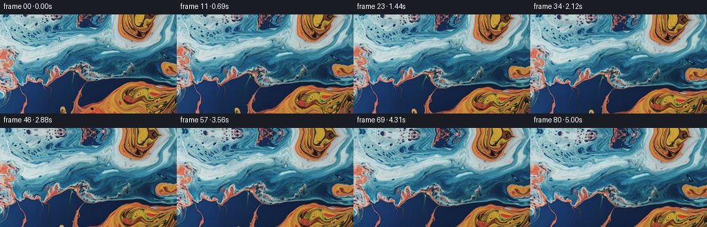
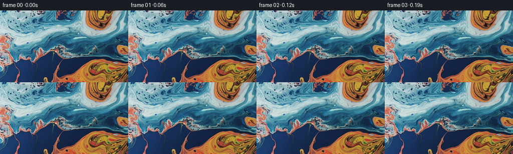
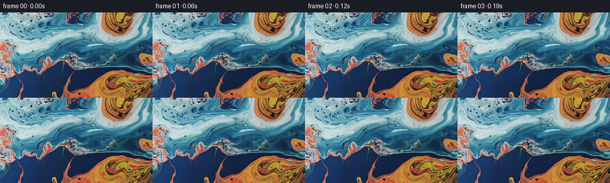

CODING AGENTS AS PIXEL WORLD MODELS
traex/DeepSeek-V4.1-Flash · 0003_s0
点击播放 · 原生 RGB 像素
逐轮保存的候选
回放视频、检查图与代码变化。
每份候选均可单独播放。实际图片检查记录在下方工具轨迹中。
候选 01播放与检查图
点击播放 · 原生 RGB 像素


展开代码变化
--- 上一保存版本
+++ 本次保存版本
@@ -0,0 +1,144 @@
+from pathlib import Path
+
+import numpy as np
+from PIL import Image
+from scipy.ndimage import gaussian_filter, map_coordinates
+
+import artifact_io
+
+
+CASE_DIR = Path(__file__).resolve().parent
+FRAME_COUNT = 81
+WIDTH = 256
+HEIGHT = 144
+FPS = 16.0
+
+
+def smoothstep(value):
+ value = np.clip(value, 0.0, 1.0)
+ return value * value * (3.0 - 2.0 * value)
+
+
+def vortex_displacement(x, y, time):
+ """Return a sum of localized rotational displacements."""
+ # Centers are chosen from the large eddies visible in the source.
+ vortices = (
+ # cx0, cy0, dx, dy, sigma, angular displacement, phase
+ (209.0, 35.0, 5.5, -2.0, 60.0, 0.205, 0.4),
+ (211.0, 124.0, -5.0, 1.5, 63.0, -0.235, 1.8),
+ (103.0, 92.0, 7.0, 2.5, 77.0, 0.135, 3.1),
+ (32.0, 19.0, -3.0, 3.0, 53.0, 0.095, 4.4),
+ (140.0, 13.0, 4.0, 1.0, 46.0, -0.080, 5.5),
+ )
+
+ dx_total = np.zeros_like(x)
+ dy_total = np.zeros_like(y)
+ pulse = 0.82 + 0.18 * np.sin(2.0 * np.pi * time / 4.8)
+
+ for cx0, cy0, drift_x, drift_y, sigma, angle, phase in vortices:
+ cx = cx0 + drift_x * np.sin(2.0 * np.pi * time / 4.1 + phase)
+ cy = cy0 + drift_y * np.sin(2.0 * np.pi * time / 3.6 + phase * 0.7)
+ rx = x - cx
+ ry = y - cy
+ radius2 = rx * rx + ry * ry
+ weight = np.exp(-radius2 / (2.0 * sigma * sigma))
+ theta = angle * pulse * weight
+ cos_t = np.cos(theta)
+ sin_t = np.sin(theta)
+ # Rotating around the vortex center; near the core this is identity.
+ dx_total += rx * cos_t - ry * sin_t - rx
+ dy_total += rx * sin_t + ry * cos_t - ry
+
+ return dx_total, dy_total
+
+
+def flow_displacement(x, y, time):
+ dx, dy = vortex_displacement(x, y, time)
+
+ # Broad horizontal currents make the marbling stream rather than merely spin.
+ current = 2.8 * np.sin(2.0 * np.pi * y / 68.0 + 0.70 * time)
+ current *= np.exp(-((y - 68.0) / 72.0) ** 2)
+ dx += current
+ dy += 1.15 * np.sin(2.0 * np.pi * x / 95.0 - 0.48 * time)
+
+ # A smaller counter-current breaks up the regularity of the large eddies.
+ dx += 0.85 * np.sin(2.0 * np.pi * (y + 14.0) / 31.0 + 1.15 * time)
+ dy += 0.50 * np.sin(2.0 * np.pi * (x - 20.0) / 43.0 - 0.90 * time)
+ return dx, dy
+
+
+def render_frame(source, frame_index):
+ if frame_index == 0:
+ return source.copy()
+
+ t = frame_index / FPS
+ duration = (FRAME_COUNT - 1) / FPS
+ progress = smoothstep(frame_index / (FRAME_COUNT - 1))
+
+ yy, xx = np.mgrid[0:HEIGHT, 0:WIDTH].astype(np.float32)
+
+ # Tilting up moves the photographed scene downward through the frame.
+ camera_shift_y = 10.5 * progress
+ camera_shift_x = 1.2 * progress
+ qx = xx - camera_shift_x
+ qy = yy - camera_shift_y
+
+ # The tilt has a very slight perspective expansion toward the top.
+ qx = WIDTH * 0.5 + (qx - WIDTH * 0.5) * (1.0 - 0.010 * progress)
+ qy = HEIGHT * 0.5 + (qy - HEIGHT * 0.5) * (1.0 - 0.014 * progress)
+
+ dx, dy = flow_displacement(qx, qy, t)
+ motion_ramp = 0.10 + 0.90 * smoothstep(frame_index / 12.0)
+ motion_ramp *= 0.78 + 0.22 * smoothstep(frame_index / (FRAME_COUNT - 1))
+
+ # Backward-map through the flow field.
+ sx = qx - dx * motion_ramp
+ sy = qy - dy * motion_ramp
+
+ warped = np.empty(source.shape, dtype=np.float32)
+ for channel in range(3):
+ warped[..., channel] = map_coordinates(
+ source[..., channel].astype(np.float32),
+ (sy, sx),
+ order=3,
+ mode="reflect",
+ prefilter=True,
+ )
+
+ # Liquid highlights drift and subtly tighten as the surface rolls.
+ luminance = (
+ 0.2126 * warped[..., 0]
+ + 0.7152 * warped[..., 1]
+ + 0.0722 * warped[..., 2]
+ )
+ highlight = smoothstep((luminance - 112.0) / 95.0)
+ lighting = 1.0 + 0.020 * progress * np.sin(
+ 2.0 * np.pi * (xx / 187.0 - yy / 121.0 + 0.22 * t)
+ )
+ lighting += 0.012 * progress * highlight * np.sin(
+ 2.0 * np.pi * (yy / 57.0 - 0.35 * t)
+ )
+ warped *= lighting[..., None]
+
+ # Very light optical softening avoids spline sparkle while retaining filaments.
+ for channel in range(3):
+ warped[..., channel] = gaussian_filter(warped[..., channel], sigma=0.32)
+
+ return np.clip(warped, 0, 255).astype(np.uint8)
+
+
+def main():
+ source = np.asarray(Image.open(CASE_DIR / "first_frame.png").convert("RGB"))
+ assert source.shape == (HEIGHT, WIDTH, 3)
+
+ frames = np.empty((FRAME_COUNT, HEIGHT, WIDTH, 3), dtype=np.uint8)
+ frames[0] = source
+ for index in range(1, FRAME_COUNT):
+ frames[index] = render_frame(source, index)
+
+ artifact_io.save(frames, CASE_DIR)
+ print(f"Generated {len(frames)} frames at {WIDTH}x{HEIGHT}, {FPS:g} fps")
+
+
+if __name__ == "__main__":
+ main()
候选 02播放与检查图
点击播放 · 原生 RGB 像素

展开代码变化
代码未变化；重新保存了产物。
候选 03播放与检查图
点击播放 · 原生 RGB 像素

展开代码变化
--- 上一保存版本
+++ 本次保存版本
@@ -78,7 +78,7 @@
yy, xx = np.mgrid[0:HEIGHT, 0:WIDTH].astype(np.float32)
# Tilting up moves the photographed scene downward through the frame.
- camera_shift_y = 10.5 * progress
+ camera_shift_y = 13.0 * progress
camera_shift_x = 1.2 * progress
qx = xx - camera_shift_x
qy = yy - camera_shift_y
@@ -88,8 +88,7 @@
qy = HEIGHT * 0.5 + (qy - HEIGHT * 0.5) * (1.0 - 0.014 * progress)
dx, dy = flow_displacement(qx, qy, t)
- motion_ramp = 0.10 + 0.90 * smoothstep(frame_index / 12.0)
- motion_ramp *= 0.78 + 0.22 * smoothstep(frame_index / (FRAME_COUNT - 1))
+ motion_ramp = 0.08 + 0.92 * smoothstep(frame_index / 24.0)
# Backward-map through the flow field.
sx = qx - dx * motion_ramp
候选 04播放与检查图
可观测工具轨迹
实际执行的命令与返回图片。
命令 1exit 0
/bin/bash -c "pwd && rg --files -g '"'!*.mp4'"' -g '"'!*.png'"' -g '"'!*.jpg'"' -g '"'!*.jpeg'"' | sort | head -200"
命令 2exit 0
/bin/bash -c "printf '%s\\n' '--- prompt.txt ---'; sed -n '1,240p' prompt.txt; printf '%s\\n' '--- GENERATION_RULES.md ---'; sed -n '1,280p' GENERATION_RULES.md"
命令 3exit 1
/bin/bash -c "find . -maxdepth 2 -type f -printf '%p\\t%k KB\\n' | sort | head -200; printf '%s\\n' '--- tools ---'; command -v ffmpeg; command -v ffprobe; command -v python3; command -v convert; command -v magick"
命令 4exit 0
/bin/bash -c "sed -n '1,280p' artifact_io.py"
命令 5exit 0
/bin/bash -c "cat task_spec.json; printf '\\n--- player ---\\n'; sed -n '1,260p' player_template.html"
命令 6exit 0
/bin/bash -c "python3 - <<'PY'
from PIL import Image
import numpy as np
im=Image.open('first_frame.png')
a=np.asarray(im)
print(im.mode, im.size, a.shape, a.dtype)
print('min/max/mean', a.min(axis=(0,1)), a.max(axis=(0,1)), a.mean(axis=(0,1)))
PY"命令 7exit 0
/bin/bash -c "python3 - <<'PY'
try:
import scipy; print('scipy', scipy.__version__)
except Exception as e: print('no scipy', e)
try:
import cv2; print('cv2', cv2.__version__)
except Exception as e: print('no cv2', e)
try:
import imageio; print('imageio', imageio.__version__)
except Exception as e: print('no imageio', e)
try:
import skimage; print('skimage', skimage.__version__)
except Exception as e: print('no skimage', e)
PY"命令 8exit 1
/bin/bash -c 'time python3 generate.py'
命令 9exit 0
/bin/bash -c 'time python3 generate.py'
命令 10exit 0
/bin/bash -c 'du -sh .; find frames -type f | wc -l; ls -lh pixels.npz index.html inspection.png transition_check.png generate.py; python3 -m py_compile generate.py'
命令 11exit 0
/bin/bash -c "python3 - <<'PY'
from pathlib import Path
import numpy as np
from PIL import Image
src=np.asarray(Image.open('first_frame.png').convert('RGB'))
f=np.stack([np.asarray(Image.open(p).convert('RGB')) for p in sorted(Path('frames').glob('*.png'))])
d=np.abs(f[1:].astype(np.int16)-f[:-1].astype(np.int16))
print('shape',f.shape,'dtype',f.dtype)
print('frame0 exact',np.array_equal(f[0],src),'maxdiff',np.abs(f[0].astype(int)-src.astype(int)).max())
print('per-step mean abs diff:')
print(np.round(d.mean(axis=(1,2,3)),3).tolist())
print('per-step p99 abs diff:')
print(np.percentile(d,99,axis=(1,2,3)).round(1).tolist())
print('frame endpoints mean:', f[0].mean(axis=(0,1)).round(2), f[-1].mean(axis=(0,1)).round(2))
PY"命令 12exit 0
/bin/bash -c "python3 generate.py && python3 - <<'PY'
from pathlib import Path
import numpy as np
from PIL import Image
src=np.asarray(Image.open('first_frame.png').convert('RGB'))
f=np.stack([np.asarray(Image.open(p).convert('RGB')) for p in sorted(Path('frames').glob('*.png'))])
d=np.abs(f[1:].astype(np.int16)-f[:-1].astype(np.int16))
step=d.mean(axis=(1,2,3))
print('frame0 exact:', np.array_equal(f[0], src))
print('step mean min/max:', round(step.min(),3), round(step.max(),3))
print('steps 1-16:', np.round(step[:16],3).tolist())
print('steps 17-40:', np.round(step[16:40],3).tolist())
print('final mean RGB:', f[-1].mean(axis=(0,1)).round(2))
PY"命令 13exit 0
/bin/bash -c "command -v chromium || command -v chromium-browser || command -v google-chrome || true; python3 - <<'PY'
try:
import playwright; print('playwright installed')
except Exception as e: print('playwright unavailable')
PY"命令 14exit 0
/bin/bash -c 'git status --short 2>/dev/null || true; ls -lh frames/00.png frames/40.png frames/80.png inspection.png transition_check.png'
命令 15exit 0
/bin/bash -c "python3 - <<'PY'
import json, re
from pathlib import Path
import numpy as np
from PIL import Image
p=Path('pixels.npz')
a=np.load(p)['pixels']
f=np.stack([np.asarray(Image.open(x).convert('RGB')) for x in sorted(Path('frames').glob('*.png'))])
src=np.asarray(Image.open('first_frame.png').convert('RGB'))
print('pixels tensor:', a.shape, a.dtype)
print('PNG sequence:', f.shape, f.dtype, 'count', len(list(Path('frames').glob('*.png'))))
print('frame 00 exact:', np.array_equal(f[0], src))
print('index exists/size:', Path('index.html').exists(), Path('index.html').stat().st_size)
print('html has ready flag:', 'window.__pixelReady=true' in Path('index.html').read_text())
print('audio absent:', not Path('audio.wav').exists())
PY"命令 16exit 0
/bin/bash -c "python3 - <<'PY'
from playwright.sync_api import sync_playwright
with sync_playwright() as p:
print('chromium executable:', p.chromium.executable_path)
PY"命令 17exit 1
/bin/bash -c "python3 - <<'PY'
from pathlib import Path
from playwright.sync_api import sync_playwright
url=Path('index.html').resolve().as_uri()
with sync_playwright() as p:
browser=p.chromium.launch(headless=True)
page=browser.new_page(viewport={'width': 900, 'height': 620})
errors=[]
page.on('pageerror', lambda exc: errors.append(str(exc)))
page.goto(url, wait_until='load')
page.wait_for_function('window.__pixelReady === true')
page.locator('#play').click()
page.wait_for_timeout(1100)
time1=page.locator('#time').inner_text()
page.locator('#seek').fill('80')
page.locator('#seek').dispatch_event('input')
time2=page.locator('#time').inner_text()
page.screenshot(path='playback_check.png', full_page=True)
print('after play:', time1)
print('after seek:', time2)
print('errors:', errors)
print('canvas pixel dims:', page.locator('#canvas').evaluate('c => [c.width, c.height]'))
browser.close()
PY"命令 18exit 1
/bin/bash -c 'mkdir -p .tmp && TMPDIR="$PWD/.tmp" python3 - <<'"'PY'
from pathlib import Path
from playwright.sync_api import sync_playwright
url=Path('index.html').resolve().as_uri()
with sync_playwright() as p:
browser=p.chromium.launch(headless=True)
page=browser.new_page(viewport={'width': 900, 'height': 620})
errors=[]
page.on('pageerror', lambda exc: errors.append(str(exc)))
page.goto(url, wait_until='load')
page.wait_for_function('window.__pixelReady === true')
page.locator('#play').click()
page.wait_for_timeout(1100)
time1=page.locator('#time').inner_text()
page.locator('#seek').fill('80')
page.locator('#seek').dispatch_event('input')
time2=page.locator('#time').inner_text()
page.screenshot(path='playback_check.png', full_page=True)
print('after play:', time1)
print('after seek:', time2)
print('errors:', errors)
print('canvas pixel dims:', page.locator('#canvas').evaluate('c => [c.width, c.height]'))
browser.close()
PY"命令 19exit 0
/bin/bash -c "find .tmp -maxdepth 2 -type f -o -type d | head -30; python3 -m py_compile generate.py; python3 - <<'PY'
from PIL import Image
import numpy as np
src=np.asarray(Image.open('first_frame.png').convert('RGB'))
out=np.asarray(Image.open('frames/00.png').convert('RGB'))
print('final frame0 identity:', np.array_equal(src,out))
PY"视觉工具实际返回图片 1

视觉工具实际返回图片 2

视觉工具实际返回图片 3

视觉工具实际返回图片 4

视觉工具实际返回图片 5

保存候选 4 份；完成命令 19 次；可验证图片返回 5 张。原始 API 响应与完整日志保留在本地。